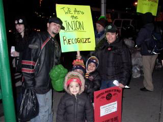

Submitted on Wed, 03/01/2006 - 4:48am
 PACK THE HEARING ROOM STARTING MONDAY, MARCH 6TH! STAND WITH IWW BARISTAS AND AGAINST STARBUCKS UNION-BUSTING!
PACK THE HEARING ROOM STARTING MONDAY, MARCH 6TH! STAND WITH IWW BARISTAS AND AGAINST STARBUCKS UNION-BUSTING!
Who:
A judge hearing testimony from senior Starbucks officials and members of the Industrial Workers of the World on allegations of threats, bribes, surveillance, discrimination, and retaliatory discharge of union employees. The IWW Starbucks Workers Union will be represented by its General Counsel, Stuart Lichten, of Schwartz, Lichten & Bright. Starbucks will be represented by Daniel Nash and Gregory Knopp of the corporate firm Akin Gump. Ironically, Nash and Knopp are the very same lawyers who were advising the company during the anti-union campaign that resulted in the federal complaint.
Submitted on Wed, 02/15/2006 - 5:12am
 "By building organizations based on solidarity, rather than on
bureaucratic chain-of-command, we build organizations that by their very
existence help to bring a new kind of society into being."
--Staughton Lynd, Solidarity Unionism
"By building organizations based on solidarity, rather than on
bureaucratic chain-of-command, we build organizations that by their very
existence help to bring a new kind of society into being."
--Staughton Lynd, Solidarity Unionism
For the first time in recent memory wobblies from all over will be
meeting with the primary objective of discussing organizing. The
Organizing Summit is what many wobs have been wanting for years. It is a
chance to focus on organizing in the union and what it means to say,
"Every member is an organizer."
The weekend will be hosted by the Austin GMB and was proposed at General
Assembly 2005 in the hopes of supporting the work of the Organizing
Department Formation Committee (ODFC). The assembly endorsed the Summit
and the ODFC has also endorsed the meeting.
Submitted on Fri, 02/10/2006 - 2:54pm
A Message from the IWW Starbucks Workers Union - February 10, 2006
Religious Discrimination
For the second time in as many months, Starbucks management has kicked SWU member Suley Ayala out of the workplace for wearing her modest Pentagram necklace. Ms. Ayala is a practicing Wiccan and as a religious observance never takes off the necklace. She wore the necklace at Starbucks without interruption for three years until the company started harassing her after she and a group of her co-workers went public as members of the Starbucks Workers Union on November 18, 2005. Since then various management officials have badgered her and sent her home for refusing to take off the necklace. Ms. Ayala is extremely distraught and understandably angry. Management can't even get its story straight, sometimes saying no religious symbols are allowed and other times saying the necklace is too distracting. All the while, baristas wearing crosses of the same modest size have never been disciplined. Our opinion is that Starbucks is exploiting Suley's non-traditional religion to retaliate against her for union activity.
Submitted on Thu, 02/09/2006 - 1:30pm
 The Industrial Workers of the World chalked up another victory in an NLRB election on Thursday, the ninth of February, at E-Z Supply Corp., a wholesale distributor of restaurant supplies and foodstuffs, located in Queens, New York.
The Industrial Workers of the World chalked up another victory in an NLRB election on Thursday, the ninth of February, at E-Z Supply Corp., a wholesale distributor of restaurant supplies and foodstuffs, located in Queens, New York.
The nominal vote was close, with sixteen votes for the union and fifteen against, but the "no" votes included six office workers whom management inappropriately tried to include in the bargaining unit. Among the warehouse workers, fork-lift operators, truck drivers, and helpers who make up the unit petitioned for by the union, the vote was sixteen to nine. The votes of the office workers were challenged by the union, but given its clear victory, the union will most likely forgo those challenges and welcome the office employees into the organization as Fellow Workers.
Union members in the shop demonstrated admirable self-discipline and solidarity, and were jubilant at the success of their organizing efforts. The New York City General Membership Branch is grateful to all the members of the I. W. W. at large, Se Hace Camino al Andar/Make the Road By Walking, and of the New York community, who have donated money, time, and talent to this campaign. This is the second shop in New York's foodstuffs industry to line up with the I. W. W., and there are many more to come.
Submitted on Thu, 02/09/2006 - 4:36am
By John Davisson - Columbia Spectator Staff Writer, February 08, 2006  As if ordering a cup of coffee wasn’t complicated enough these days, things could get even muckier if federal labor law weighs in.
As if ordering a cup of coffee wasn’t complicated enough these days, things could get even muckier if federal labor law weighs in.
Since 2004, a group of baristas known as the Starbucks Workers Union has sought collective bargaining rights for the chain’s employees citywide, citing a need for improved pay and healthier working conditions.
While SWU has been unable to gain recognition from Starbucks or the National Labor Relations Board, the federal body that mediates labor disputes in the private sector, members are hoping that a recent wave of unfair labor allegations against the company might reverse its fortunes.